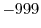

This command selects some or all of the restraints currently in memory.
The selection is added to any existing selected restraints; if instead you want to select only these restraints, call Restraints.unpick_all() first.
This command runs over all restraints in memory, including the currently unselected restraints. Be careful about this: If you have some unselected restraints in memory, Restraints.pick() may select them; if you wish to prevent this, do Restraints.remove_unpicked() before calling Restraints.pick().
A static restraint is selected if all or at least restraint_sel_atoms of its atoms are within the atom selection atmsel, if it is strong enough based on its standard deviations or force constants (see the next paragraph), and if it does not span fewer residues than residue_span_range[0], or more than residue_span_range[1]. (Restraints which act on only a single atom are not subject to this range check.) Note that here restraint_sel_atoms is used for all restraints, while the Restraints.make() command and optimizers (Section 6.11) use it for all restraint types except non-bonded pairs. (energy_data.nonbonded_sel_atoms is used for non-bonded pairs by these routines.)
To decide if a restraint is strong enough, the current standard deviations or force constants are compared with the corresponding restraints_filter[physical_restraint_type]. A harmonic restraint, lower and upper bounds, and multi-modal Gaussian restraints are selected if the (smallest) standard deviation is less than the corresponding restraints_filter[i]. The cosine energy term is selected if its force constant is larger than the corresponding restraints_filter[i]. Restraints with other mathematical forms (including user-defined forms) are always selected, as is any restraint of physical typeif restraints_filter[i] =  . The restraints_filter angles have to be specified in radians.
# Example for: restraints.pick(), restraints.condense()
# This will pick only restraints that include at least one
# mainchain (CA, N, C, O) atom and write them to a file.
from modeller import *
from modeller.scripts import complete_pdb
log.verbose()
env = environ()
env.io.atom_files_directory = ['../atom_files']
env.libs.topology.read(file='$(LIB)/top_heav.lib')
env.libs.parameters.read(file='$(LIB)/par.lib')
mdl = complete_pdb(env, '1fas')
allsel = selection(mdl)
mdl.restraints.make(allsel, restraint_type='stereo', spline_on_site=False)
allsel.energy()
atmsel = allsel.only_atom_types('CA N C O')
mdl.restraints.pick(atmsel, restraint_sel_atoms=1)
# Delete the unselected restraints from memory:
mdl.restraints.condense()
atmsel.energy()
mdl.restraints.write(file='1fas.rsr')